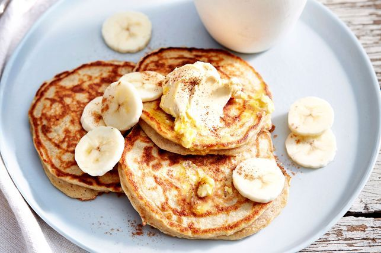

Banana Pancakes Recipe

Description
Wondering what to do with over ripe bananas? Learn how to make banana pancakes using 3 ingredients! All you need to add is an egg and some flour.
Ingredients
- 1 small ripe banana
- 1 medium egg
- 2 tbsp wholemeal self-raising flour
- oil spray
Steps
- Mash banana in a medium bowl until smooth. Whisk in egg, then flour until smooth. Set aside for 5 minutes.
- Lightly spray a medium non-stick frying pan with oil and heat over medium heat. Spoon 2 tablespoons batter into pan and spread out with the back of a spoon until 1cm thick. Repeat with remaining batter to make 2 more pancakes.
- Cook for 1-2 minutes or until golden. Turn and cook for 1-2 minutes or until pancakes are golden and cooked through. Serve.